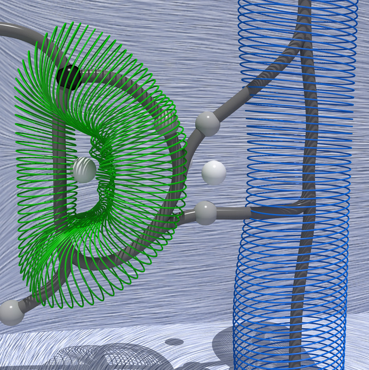

Vortices in the magnetically-induced current density in LiH molecule studied through the lens of the Omega function¶
|  |
|---|
An automatic approach based on Topological Data Analysis extracts axial (blue) and toroidal (green) vortices in magnetically-induced current density as specific sub-sets of the separatrices (gray curves) of the Morse-Smale complex of the Omega index. |
Pipeline description¶
This example illustrates (1) the calculation of the magnetically-induced current density (MICD) tensor in the LiH molecule in the DIRAC software, followed by (2) the calculation of the Omega index with the qcten script (version 1c6231e) and (3) its subsequent topological analysis in the TTK software.
The first step involving quantum chemistry calculations aims to compute the MICD tensor and its gradient and export them on a 3D grid.
The purpose of the second step is a pointwise derivation of a scalar function from these tensor fields. In this case, the studied scalar field represents the so-called Omega index, used as an indicator of vortices in the first-order current density field. This step also involves translating data exported from DIRAC in TXT to the VTI format favored by the TTK code. Simultaneously, it applies the resampling filter ("ResampleToImage") without changing the number of grid points or grid bounds.
The final step involves analyzing the Omega scalar field in the TTK software. It starts with extracting all critical point pairs, determining a persistence threshold for the salient pairs, and using this threshold to simplify the topology of the Omega scalar field. Then, the computation of the Morse-Smale complex of such simplified field results, among others, in the extraction of its one-dimensional separatrices. A subset of these separatrices connecting 2-saddles and maxima well captures the center lines of vortices. These can then be associated with axial and toroidal vortices in the MICD of the LiH molecule. Notable TTK filters employed in this analysis are the PersistenceDiagram, TopologicalSimplification, MorseSmaleComplex, and PersistentGenerators.
For more details on this analysis, please see the publication on arXiv. All data files generated in this analysis are on zenodo. All links are at the bottom of this page.
Below, we describe these three steps in more detail.
Quantum chemistry calculations¶
Setup¶
The experimental geometry of LiH molecule from the NIST database was used (R(Li-H) = 1.595 Angstrom).
The MICD tensor and its gradient were calculated analytically in the development version of the DIRAC software (commit hash 2330f11) with the Dirac-Coulomb Hamiltonian, the B3LYP exchange-correlation functional, and the def-TZVP basis set applied for both atoms. London atomic orbitals and the simple magnetic balance scheme were applied in response calculations. The densities were exported on the cube grid of 128 points in each Cartesian direction using the default visualization options in DIRAC.
DIRAC inputs¶
- Molecular geometry of LiH molecule in XYZ format (in Angstrom): LiH.xyz
- Input for a wave function optimization: scf.inp
- Input for calculations of the magnetic-field response (uses NMR shielding calculations): prp.inp
- Inputs for calculations of the components of the MICD tensor, composed of the elements of the current density vector induced by the magnetic field applied in the "x"-direction (jbx.inp), the "y"-direction (jby.inp), and the "z"-direction (jbz.inp)
- Inputs for calculations of the components of the gradient of the MICD tensor, composed of the elements of the gradient of the current density vector induced by the magnetic field applied in the "x"-direction (gradjbx.inp), the "y"-direction (gradjby.inp), and the "z"-direction (gradjbz.inp)
DIRAC outputs¶
- Files with exported elements of the MICD tensor and its gradient on a grid in TXT format; these are also available on zenodo.
- DIRAC text output files, available in the repository and on zenodo.
Execution¶
-
Below, we assume that the
pamscript of DIRAC is available in$PATH. -
Step 1. Wave function optimization:
mol=LiH.xyz
inp_scf=scf.inp
pam --inp=$inp_scf --mol=$mol --outcmo
- Step 2. Response calculations:
mol=LiH.xyz
inp_prp=prp.inp
pam --inp=$inp_prp --mol=$mol --incmo --get="DFCOEF=DFCOEF.smb TBMO PAMXVC"
-
Step 3. Calculations and export of real-space densities,
- involving the elements of the MICD tensor, on an example of the
jbx.inpfile:
mol=LiH.xyz vis=jbx inp_vis=$vis.inp pam --inp=$inp_vis --mol=$mol --put="DFCOEF.smb=DFCOEF TBMO PAMXVC" --get="plot.3d.vector=$vis.txt"- involving the elements of the gradient of the MICD tensor, on an example of the
gradjbx.inpfile:
mol=LiH.xyz vis=gradjbx inp_vis=$vis.inp pam --inp=$inp_vis --mol=$mol --put="DFCOEF.smb=DFCOEF TBMO PAMXVC" --get="plot.3d.tensor=$vis.txt"- analogous computations should be done with the
jby.inpfile (please change ofvis=jbxtovis=jby) and thejbz.inpfile (please changevis=jbxtovis=jby), - analogous computations should be done with the
gradjby.inpfile (please change ofvis=gradjbxtovis=gradjby) and thegradjbz.inpfile (please changevis=gradjbxtovis=gradjby).
- involving the elements of the MICD tensor, on an example of the
Calculation of scalar functions for the topological data analysis¶
Inputs¶
- Data exported from DIRAC:
- The "x"/"y"/"z" elements of the current density vector field induced by the magnetic field applied in the "x" direction are in the 4th/5th/6th-column of the
jbx.txtfile. - The "x"/"y"/"z" elements of the current density vector field induced by the magnetic field applied in the "y" direction are in the 4th/5th/6th-column of the
jby.txtfile. - The "x"/"y"/"z" elements of the current density vector field induced by the magnetic field applied in the "z" direction are in the 4th/5th/6th-column of the
jbz.txtfile. - The "x"/"y"/"z" elements of the gradient of the current density vector field induced by the magnetic field applied in the "z" direction are in the
gradjbx.txtfile, starting from the 4th column). - In all TXT files exported from DIRAC, first three columns refer to the "x"/"y"/"z"-coordinates of grid vertices.
- The "x"/"y"/"z" elements of the current density vector field induced by the magnetic field applied in the "x" direction are in the 4th/5th/6th-column of the
Execution¶
-
Below, we assume that the conda environment with
qcteninstalled (see Installation instructions to qcten) is activated. In this guilde, we use theqcten_envname for this environment. Theqctenscript calculates the Omega function from the DIRAC data (here: available in raw text files) and exports it in the VTI format. To reproduce this step: -
prepare the run script and the input file for
qcten(samplerun.pyandbz_omega_wz.inpare available on zenodo). - if needed, adapt the paths to DIRAC data (
jb*.txtandgradjb*.txtfiles) in the input file, and executepython run.py - analogous computations can be done on data corresponding to the perturbing magnetic field applied in the "x"- and "y"-directions (to get the Omega function for the "Bx" and "By" fields)
Outputs¶
The above Python script produces the start_data_omega_bz.vti file, which can also be found in the repository and on zenodo.
Topological Data Analysis¶
Inputs¶
-
It may help to mark the positions of the Li and H nuclei on the plots; for this purpose, the molecular geometry of the LiH molecule in CSV format (in atomic units) is available in the LiH.csv file.
-
MICD-related data in VTI format:
-
Omega function derived from the magnetically-induced current density vector corresponding to the perturbation of the magnetic field applied perpendicularly to the Li-H bond:
start_data_omega_bz.vtifile in the repository and on zenodo; data description:omega_bz- corresponds to Omega function calculated for the magnetic field applied perpendicularly to the Li-H bond ("bz");bz_wz- corresponds to the "z"-component of the curl of the current density vector induced by the magnetic field applied perpendicularly to the Li-H bond ("bz"); it is a zz-component of the vorticity tensor.
-
The elements of the magnetically-induced current density vector corresponding to the perturbation of the magnetic field applied perpendicularly to the Li-H bond are on the
start_data_bz.vtifile in the repository and on zenodo; the "x"/"y"/"z" elements of this vector are marked asbz_jx,bz_jy,bz_jz, respectively. -
Additionally, on zenodo, we also share the VTI file which contains all the elements of the full MICD tensor (
start_data_jb_tensor.vtifile).
-
ParaView¶
To reproduce the images and to explore the TDA pipeline, go to the root directory of this repository and enter the following command:
paraview --state=pvsm/lih.pvsm
Python code¶
The following Python code reproduces the main analysis pipeline in batch mode.
1 2 3 4 5 6 7 8 9 10 11 12 13 14 15 16 17 18 19 20 21 22 23 24 25 26 27 28 29 30 31 32 33 34 35 36 37 38 39 40 41 42 43 44 45 46 47 48 49 | |
To run the above Python script, go to the root directory of this repository and enter the following command:
pvpython python/lih.py
Outputs¶
The above Python script produces the following outputs:
axialVortex.vtu: the geometry of the axial vortex in VTU file format (to be visualized with ParaView, change the extension tocsvinstead ofvtuin the above script to export to an ASCII file instead).toroidalVortex.vtu: the geometry of the toroidal vortex in VTU file format (to be visualized with ParaView, change the extension tocsvinstead ofvtuin the above script to export to an ASCII file instead).
Resources and additional information¶
- Prerequisites
- DIRAC
- TTK
-
The calculations and export of the magnetically-induced current density are also discusssed in the official DIRAC tutorial.
-
Related data: the publication on arXiv and its 1-page summary, data files generated in this analysis on zenodo.
-
To fully reproduce the results reported in the publication, please check this link.
- To fully reproduce the publication, please check this link.